fastica_centered_03
Matthew Stephens
2025-11-19
Last updated: 2026-05-23
Checks: 7 0
Knit directory: misc/analysis/
This reproducible R Markdown analysis was created with workflowr (version 1.7.2). The Checks tab describes the reproducibility checks that were applied when the results were created. The Past versions tab lists the development history.
Great! Since the R Markdown file has been committed to the Git repository, you know the exact version of the code that produced these results.
Great job! The global environment was empty. Objects defined in the global environment can affect the analysis in your R Markdown file in unknown ways. For reproduciblity it’s best to always run the code in an empty environment.
The command set.seed(1) was run prior to running the
code in the R Markdown file. Setting a seed ensures that any results
that rely on randomness, e.g. subsampling or permutations, are
reproducible.
Great job! Recording the operating system, R version, and package versions is critical for reproducibility.
Nice! There were no cached chunks for this analysis, so you can be confident that you successfully produced the results during this run.
Great job! Using relative paths to the files within your workflowr project makes it easier to run your code on other machines.
Great! You are using Git for version control. Tracking code development and connecting the code version to the results is critical for reproducibility.
The results in this page were generated with repository version 170e48c. See the Past versions tab to see a history of the changes made to the R Markdown and HTML files.
Note that you need to be careful to ensure that all relevant files for
the analysis have been committed to Git prior to generating the results
(you can use wflow_publish or
wflow_git_commit). workflowr only checks the R Markdown
file, but you know if there are other scripts or data files that it
depends on. Below is the status of the Git repository when the results
were generated:
Ignored files:
Ignored: .DS_Store
Ignored: .Rhistory
Ignored: .Rproj.user/
Ignored: GSE87571/
Ignored: analysis/.RData
Ignored: analysis/.Rhistory
Ignored: analysis/ALStruct_cache/
Ignored: data/.Rhistory
Ignored: data/methylation-data-for-matthew.rds
Ignored: data/pbmc/
Ignored: data/pbmc_purified.RData
Untracked files:
Untracked: .dropbox
Untracked: GSE41037/
Untracked: Icon
Untracked: analysis/GHstan.Rmd
Untracked: analysis/GTEX-cogaps.Rmd
Untracked: analysis/PACS.Rmd
Untracked: analysis/Rplot.png
Untracked: analysis/SPCAvRP.rmd
Untracked: analysis/abf_comparisons.Rmd
Untracked: analysis/admm_02.Rmd
Untracked: analysis/admm_03.Rmd
Untracked: analysis/bispca.Rmd
Untracked: analysis/cache/
Untracked: analysis/cholesky.Rmd
Untracked: analysis/compare-transformed-models.Rmd
Untracked: analysis/cormotif.Rmd
Untracked: analysis/cp_ash.Rmd
Untracked: analysis/eQTL.perm.rand.pdf
Untracked: analysis/eb_power2.Rmd
Untracked: analysis/eb_prepilot.Rmd
Untracked: analysis/eb_var.Rmd
Untracked: analysis/ebpmf1.Rmd
Untracked: analysis/ebpmf_sla_text.Rmd
Untracked: analysis/ebspca_sims.Rmd
Untracked: analysis/explore_psvd.Rmd
Untracked: analysis/fa_check_identify.Rmd
Untracked: analysis/fa_iterative.Rmd
Untracked: analysis/fastica_heated.Rmd
Untracked: analysis/flash_cov_overlapping_groups_init.Rmd
Untracked: analysis/flash_test_tree.Rmd
Untracked: analysis/flashier_newgroups.Rmd
Untracked: analysis/flashier_nmf_triples.Rmd
Untracked: analysis/flashier_pbmc.Rmd
Untracked: analysis/flashier_snn_shifted_prior.Rmd
Untracked: analysis/greedy_ebpmf_exploration_00.Rmd
Untracked: analysis/ieQTL.perm.rand.pdf
Untracked: analysis/lasso_em_03.Rmd
Untracked: analysis/m6amash.Rmd
Untracked: analysis/mash_bhat_z.Rmd
Untracked: analysis/mash_ieqtl_permutations.Rmd
Untracked: analysis/matrix_beta.Rmd
Untracked: analysis/meth_flash_01.Rmd
Untracked: analysis/methylation_example.Rmd
Untracked: analysis/mixsqp.Rmd
Untracked: analysis/mr.ash_lasso_init.Rmd
Untracked: analysis/mr.mash.test.Rmd
Untracked: analysis/mr_ash_modular.Rmd
Untracked: analysis/mr_ash_parameterization.Rmd
Untracked: analysis/mr_ash_ridge.Rmd
Untracked: analysis/mv_gaussian_message_passing.Rmd
Untracked: analysis/nejm.Rmd
Untracked: analysis/nmf_bg.Rmd
Untracked: analysis/nonneg_underapprox.Rmd
Untracked: analysis/normal_conditional_on_r2.Rmd
Untracked: analysis/normalize.Rmd
Untracked: analysis/pbmc.Rmd
Untracked: analysis/pca_binary_weighted.Rmd
Untracked: analysis/pca_l1.Rmd
Untracked: analysis/poisson_nmf_approx.Rmd
Untracked: analysis/poisson_shrink.Rmd
Untracked: analysis/poisson_transform.Rmd
Untracked: analysis/qrnotes.txt
Untracked: analysis/ridge_iterative_02.Rmd
Untracked: analysis/ridge_iterative_splitting.Rmd
Untracked: analysis/samps/
Untracked: analysis/sc_bimodal.Rmd
Untracked: analysis/shrinkage_comparisons_changepoints.Rmd
Untracked: analysis/susie_cov.Rmd
Untracked: analysis/susie_en.Rmd
Untracked: analysis/susie_z_investigate.Rmd
Untracked: analysis/svd-timing.Rmd
Untracked: analysis/temp.RDS
Untracked: analysis/temp.Rmd
Untracked: analysis/test-figure/
Untracked: analysis/test.Rmd
Untracked: analysis/test.Rpres
Untracked: analysis/test.md
Untracked: analysis/test_qr.R
Untracked: analysis/test_sparse.Rmd
Untracked: analysis/tree_dist_top_eigenvector.Rmd
Untracked: analysis/z.txt
Untracked: code/coordinate_descent_symNMF.R
Untracked: code/multivariate_testfuncs.R
Untracked: code/rqb.hacked.R
Untracked: data/4matthew/
Untracked: data/4matthew2/
Untracked: data/E-MTAB-2805.processed.1/
Untracked: data/ENSG00000156738.Sim_Y2.RDS
Untracked: data/GDS5363_full.soft.gz
Untracked: data/GSE41265_allGenesTPM.txt
Untracked: data/Muscle_Skeletal.ACTN3.pm1Mb.RDS
Untracked: data/P.rds
Untracked: data/Thyroid.FMO2.pm1Mb.RDS
Untracked: data/bmass.HaemgenRBC2016.MAF01.Vs2.MergedDataSources.200kRanSubset.ChrBPMAFMarkerZScores.vs1.txt.gz
Untracked: data/bmass.HaemgenRBC2016.Vs2.NewSNPs.ZScores.hclust.vs1.txt
Untracked: data/bmass.HaemgenRBC2016.Vs2.PreviousSNPs.ZScores.hclust.vs1.txt
Untracked: data/eb_prepilot/
Untracked: data/finemap_data/fmo2.sim/b.txt
Untracked: data/finemap_data/fmo2.sim/dap_out.txt
Untracked: data/finemap_data/fmo2.sim/dap_out2.txt
Untracked: data/finemap_data/fmo2.sim/dap_out2_snp.txt
Untracked: data/finemap_data/fmo2.sim/dap_out_snp.txt
Untracked: data/finemap_data/fmo2.sim/data
Untracked: data/finemap_data/fmo2.sim/fmo2.sim.config
Untracked: data/finemap_data/fmo2.sim/fmo2.sim.k
Untracked: data/finemap_data/fmo2.sim/fmo2.sim.k4.config
Untracked: data/finemap_data/fmo2.sim/fmo2.sim.k4.snp
Untracked: data/finemap_data/fmo2.sim/fmo2.sim.ld
Untracked: data/finemap_data/fmo2.sim/fmo2.sim.snp
Untracked: data/finemap_data/fmo2.sim/fmo2.sim.z
Untracked: data/finemap_data/fmo2.sim/pos.txt
Untracked: data/logm.csv
Untracked: data/m.cd.RDS
Untracked: data/m.cdu.old.RDS
Untracked: data/m.new.cd.RDS
Untracked: data/m.old.cd.RDS
Untracked: data/mainbib.bib.old
Untracked: data/mat.csv
Untracked: data/mat.txt
Untracked: data/mat_new.csv
Untracked: data/matrix_lik.rds
Untracked: data/paintor_data/
Untracked: data/running_data_chris.csv
Untracked: data/running_data_matthew.csv
Untracked: data/temp.txt
Untracked: data/y.txt
Untracked: data/y_f.txt
Untracked: data/zscore_jointLCLs_m6AQTLs_susie_eQTLpruned.rds
Untracked: data/zscore_jointLCLs_random.rds
Untracked: explore_udi.R
Untracked: output/fit.k10.rds
Untracked: output/fit.nn.pbmc.purified.rds
Untracked: output/fit.nn.rds
Untracked: output/fit.nn.s.001.rds
Untracked: output/fit.nn.s.01.rds
Untracked: output/fit.nn.s.1.rds
Untracked: output/fit.nn.s.10.rds
Untracked: output/fit.snn.s.001.rds
Untracked: output/fit.snn.s.01.nninit.rds
Untracked: output/fit.snn.s.01.rds
Untracked: output/fit.varbvs.RDS
Untracked: output/fit2.nn.pbmc.purified.rds
Untracked: output/glmnet.fit.RDS
Untracked: output/snn07.txt
Untracked: output/snn34.txt
Untracked: output/test.bv.txt
Untracked: output/test.gamma.txt
Untracked: output/test.hyp.txt
Untracked: output/test.log.txt
Untracked: output/test.param.txt
Untracked: output/test2.bv.txt
Untracked: output/test2.gamma.txt
Untracked: output/test2.hyp.txt
Untracked: output/test2.log.txt
Untracked: output/test2.param.txt
Untracked: output/test3.bv.txt
Untracked: output/test3.gamma.txt
Untracked: output/test3.hyp.txt
Untracked: output/test3.log.txt
Untracked: output/test3.param.txt
Untracked: output/test4.bv.txt
Untracked: output/test4.gamma.txt
Untracked: output/test4.hyp.txt
Untracked: output/test4.log.txt
Untracked: output/test4.param.txt
Untracked: output/test5.bv.txt
Untracked: output/test5.gamma.txt
Untracked: output/test5.hyp.txt
Untracked: output/test5.log.txt
Untracked: output/test5.param.txt
Unstaged changes:
Modified: .gitignore
Modified: analysis/eb_snmu.Rmd
Modified: analysis/ebnm_binormal.Rmd
Modified: analysis/ebpower.Rmd
Modified: analysis/flashier_log1p.Rmd
Modified: analysis/flashier_sla_text.Rmd
Modified: analysis/logistic_z_scores.Rmd
Modified: analysis/mr_ash_pen.Rmd
Modified: analysis/nmu_em.Rmd
Modified: analysis/susie_flash.Rmd
Modified: analysis/tap_free_energy.Rmd
Modified: misc.Rproj
Note that any generated files, e.g. HTML, png, CSS, etc., are not included in this status report because it is ok for generated content to have uncommitted changes.
These are the previous versions of the repository in which changes were
made to the R Markdown (analysis/fastica_centered_03.Rmd)
and HTML (docs/fastica_centered_03.html) files. If you’ve
configured a remote Git repository (see ?wflow_git_remote),
click on the hyperlinks in the table below to view the files as they
were in that past version.
| File | Version | Author | Date | Message |
|---|---|---|---|---|
| Rmd | 170e48c | Matthew Stephens | 2026-05-23 | workflowr::wflow_publish(files = c("analysis/fastica_02.Rmd", |
| html | d8229f1 | Matthew Stephens | 2026-01-17 | Build site. |
| Rmd | a69ee87 | Matthew Stephens | 2026-01-17 | workflowr::wflow_publish("analysis/fastica_centered_03.Rmd") |
library(fastICA)Introduction
I previously found that single unit fastICA can find binary sources when adding an intercept to the data matrix. Here I want to take a look at multiunit versions.
Modify fastICA code
The fastICA package has two multiunit algorithms, parallel and deflationary. Although both take a data matrix and a n.comp parameter, the code seems to require that the number of components is equal to the number of rows of X. I modified the deflationary code to allow me to specify to only find n.comp components less than the number of rows of X. And I modified the parallel code to allow me to specify whether or not to orthogonalize between iterations. I also provide defaults for some of the parameters for convenience. Here is the modified code.
ica.R.def <- function (X, n.comp, w.init, tol=1e-4, fun="logcosh", alpha=1, maxit=200, verbose=FALSE)
{
# 1. Define dimensions clearly
d <- nrow(X) # Dimension of the signal (e.g., 10 rows)
p <- ncol(X) # Number of samples (e.g., 1000 columns)
if (verbose && fun == "logcosh")
message("Deflation FastICA using logcosh approx. to neg-entropy function")
if (verbose && fun == "exp")
message("Deflation FastICA using exponential approx. to neg-entropy function")
# 2. Initialize W to be (n.comp x d)
# We want 3 rows (components), but each row must have 10 columns (weights)
W <- matrix(0, n.comp, d)
for (i in 1:n.comp) {
if (verbose)
message("Component ", i)
# 3. Initialize current weight vector w to be length d (10), not n.comp (3)
w <- matrix(w.init[i, ], d, 1)
# Deflation (Orthogonalization against previous components)
if (i > 1) {
t <- w
t[1:length(t)] <- 0
for (u in 1:(i - 1)) {
k <- sum(w * W[u, ])
t <- t + k * W[u, ]
}
w <- w - t
}
w <- w/sqrt(sum(w^2))
lim <- rep(1000, maxit)
it <- 1
if (fun == "logcosh") {
while (lim[it] > tol && it < maxit) {
wx <- t(w) %*% X
gwx <- tanh(alpha * wx)
# 4. Broadcast gwx to match input dimension d, not n.comp
# This creates a (d x p) matrix for element-wise multiplication with X
gwx <- matrix(gwx, d, p, byrow = TRUE)
xgwx <- X * gwx
v1 <- apply(xgwx, 1, FUN = mean)
g.wx <- alpha * (1 - (tanh(alpha * wx))^2)
v2 <- mean(g.wx) * w
w1 <- v1 - v2
# The above updates are basically equivalent to:
# P = t(X) %*% w
# G = tanh(P)
# G2 = 1-tanh(P)^2
# w1 = X %*% G - sum(G2) * w
#
# 5. Ensure w1 stays dimension d
w1 <- matrix(w1, d, 1)
it <- it + 1
# Deflation inside the loop
if (i > 1) {
t <- w1
t[1:length(t)] <- 0
for (u in 1:(i - 1)) {
k <- sum(w1 * W[u, ])
t <- t + k * W[u, ]
}
w1 <- w1 - t
}
w1 <- w1/sqrt(sum(w1^2))
lim[it] <- Mod(Mod(sum((w1 * w))) - 1)
if (verbose)
message("Iteration ", it - 1, " tol = ", format(lim[it]))
w <- matrix(w1, d, 1)
}
}
if (fun == "exp") {
while (lim[it] > tol && it < maxit) {
wx <- t(w) %*% X
gwx <- wx * exp(-(wx^2)/2)
# Broadcast fix
gwx <- matrix(gwx, d, p, byrow = TRUE)
xgwx <- X * gwx
v1 <- apply(xgwx, 1, FUN = mean)
g.wx <- (1 - wx^2) * exp(-(wx^2)/2)
v2 <- mean(g.wx) * w
w1 <- v1 - v2
# Dimension fix
w1 <- matrix(w1, d, 1)
it <- it + 1
if (i > 1) {
t <- w1
t[1:length(t)] <- 0
for (u in 1:(i - 1)) {
k <- sum(w1 * W[u, ])
t <- t + k * W[u, ]
}
w1 <- w1 - t
}
w1 <- w1/sqrt(sum(w1^2))
lim[it] <- Mod(Mod(sum((w1 * w))) - 1)
if (verbose)
message("Iteration ", it - 1, " tol = ", format(lim[it]))
w <- matrix(w1, d, 1)
}
}
# Store the result
W[i, ] <- w
}
W
}
# w.init should be (n.comp x nrow(X))
# n.comp is actually ignored: the number of components is determined by number of rows of w.init
ica.R.par=function(X, n.comp, w.init, tol=1e-4, fun="logcosh", alpha=1, maxit=200, verbose=FALSE, orthogonalize=TRUE)
{
Diag <- function(d) if (length(d) > 1L)
diag(d)
else as.matrix(d)
p <- ncol(X)
W <- w.init
if(orthogonalize){
sW <- La.svd(W)
W <- sW$u %*% Diag(1/sW$d) %*% t(sW$u) %*% W
} else { # just normalize the rows to sum to 1
W <- W/sqrt(rowSums(W^2))
}
W1 <- W #this line seems unnecessary?
lim <- rep(1000, maxit)
it <- 1
if (fun == "logcosh") {
if (verbose)
message("Symmetric FastICA using logcosh approx. to neg-entropy function")
while (lim[it] > tol && it < maxit) {
wx <- W %*% X
gwx <- tanh(alpha * wx)
v1 <- gwx %*% t(X)/p
g.wx <- alpha * (1 - (gwx)^2)
v2 <- Diag(apply(g.wx, 1, FUN = mean)) %*% W
W1 <- v1 - v2
if(orthogonalize){
sW1 <- La.svd(W1)
W1 <- sW1$u %*% Diag(1/sW1$d) %*% t(sW1$u) %*% W1
} else { # just normalize the rows to sum to 1
W1 <- W1/sqrt(rowSums(W1^2))
}
lim[it + 1] <- max(Mod(Mod(diag(W1 %*% t(W))) - 1))
W <- W1
if (verbose)
message("Iteration ", it, " tol = ", format(lim[it +
1]))
it <- it + 1
}
}
if (fun == "exp") {
if (verbose)
message("Symmetric FastICA using exponential approx. to neg-entropy function")
while (lim[it] > tol && it < maxit) {
wx <- W %*% X
gwx <- wx * exp(-(wx^2)/2)
v1 <- gwx %*% t(X)/p
g.wx <- (1 - wx^2) * exp(-(wx^2)/2)
v2 <- Diag(apply(g.wx, 1, FUN = mean)) %*% W
W1 <- v1 - v2
sW1 <- La.svd(W1)
W1 <- sW1$u %*% Diag(1/sW1$d) %*% t(sW1$u) %*% W1
lim[it + 1] <- max(Mod(Mod(diag(W1 %*% t(W))) - 1))
W <- W1
if (verbose)
message("Iteration ", it, " tol = ", format(lim[it +
1]))
it <- it + 1
}
}
W
}
preprocess = function(X, n.comp=10){
n <- nrow(X)
p <- ncol(X)
X <- scale(X, scale = FALSE)
X <- t(X)
## This appears to be equivalant to X1 = (sqrt(n)) * t(svd(X)$v[,1:n.comp])
V <- X %*% t(X)/n
s <- La.svd(V)
D <- diag(c(1/sqrt(s$d)))
K <- D %*% t(s$u)
K <- matrix(K[1:n.comp, ], n.comp, p)
X1 <- K %*% X
return(X1)
}Three group simulation
Here I simulate 3 groups, with only 20 members each.
K=3
p = 1000
n = 100
set.seed(1)
L = matrix(-1,nrow=n,ncol=K)
for(i in 1:K){L[sample(1:n,20),i]=1}
FF = matrix(rnorm(p*K), nrow = p, ncol=K)
X = L %*% t(FF) + rnorm(n*p,0,0.01)
plot(X %*% FF[,1])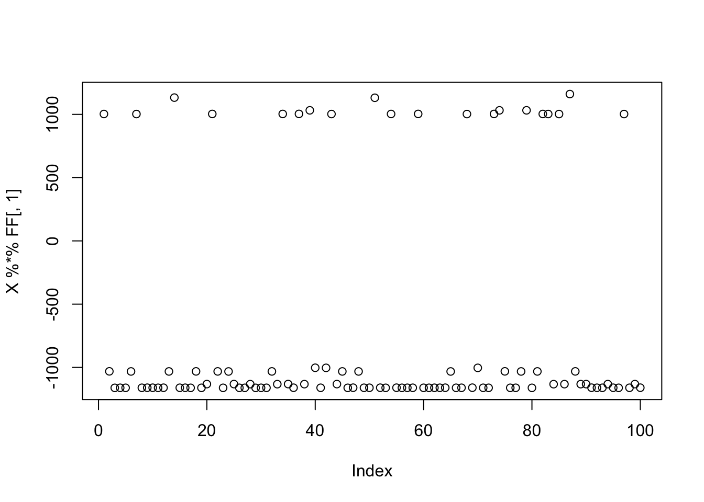
| Version | Author | Date |
|---|---|---|
| d8229f1 | Matthew Stephens | 2026-01-17 |
X1 = preprocess(X,3)
X1 = rbind(rep(1,ncol(X1)),X1)Parallel fastICA
Here I try the parallel version of fastICA with 4 components, with two different seeds. While the binary components are less “clean” than in the single unit case, they still look pretty good.
set.seed(1)
n.comp = 4
w.init = matrix(rnorm(nrow(X1)*n.comp), nrow=n.comp)
fit.par = ica.R.par(X1,n.comp,w.init = w.init)
S = t(fit.par %*% X1)
cor(S,L) [,1] [,2] [,3]
[1,] 0.08403629 -0.99257932 0.0824624
[2,] -0.12025284 -0.08896430 0.9943317
[3,] -0.99487249 0.08509843 0.1167245
[4,] -0.55638739 -0.57292972 -0.5658669plot(S[,1])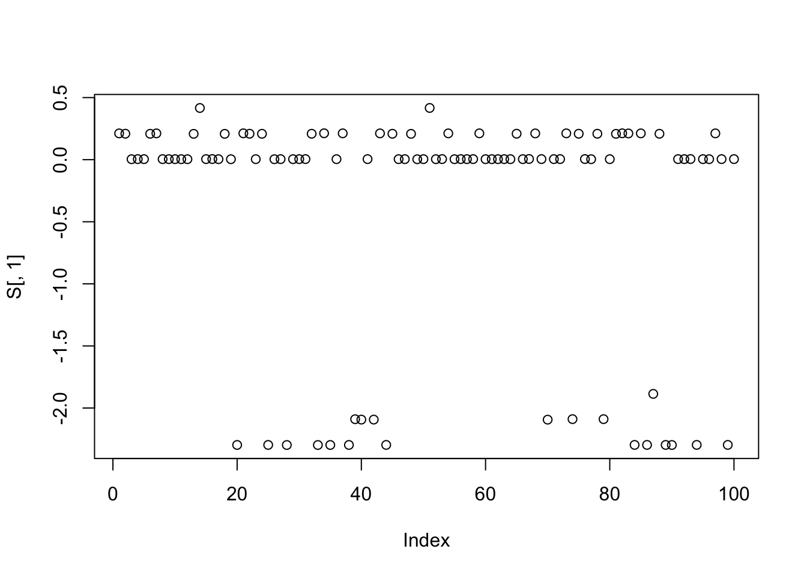
| Version | Author | Date |
|---|---|---|
| d8229f1 | Matthew Stephens | 2026-01-17 |
plot(S[,2])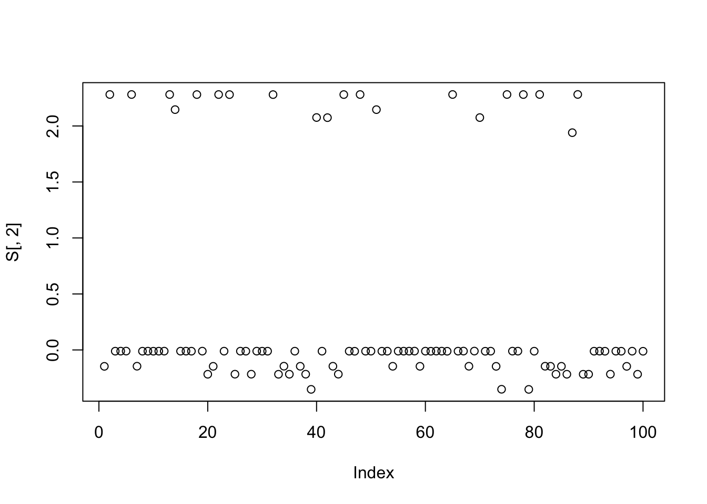
| Version | Author | Date |
|---|---|---|
| d8229f1 | Matthew Stephens | 2026-01-17 |
plot(S[,3])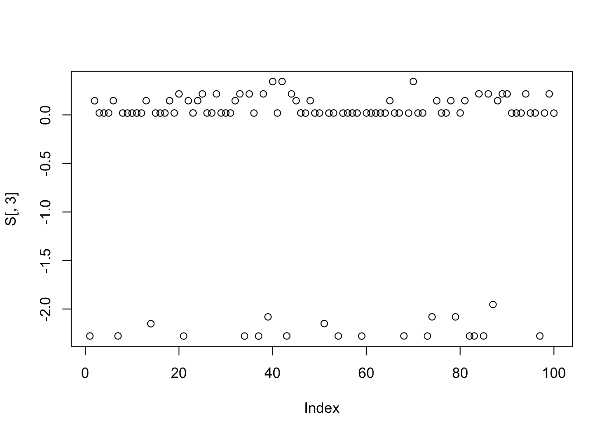
| Version | Author | Date |
|---|---|---|
| d8229f1 | Matthew Stephens | 2026-01-17 |
plot(S[,4])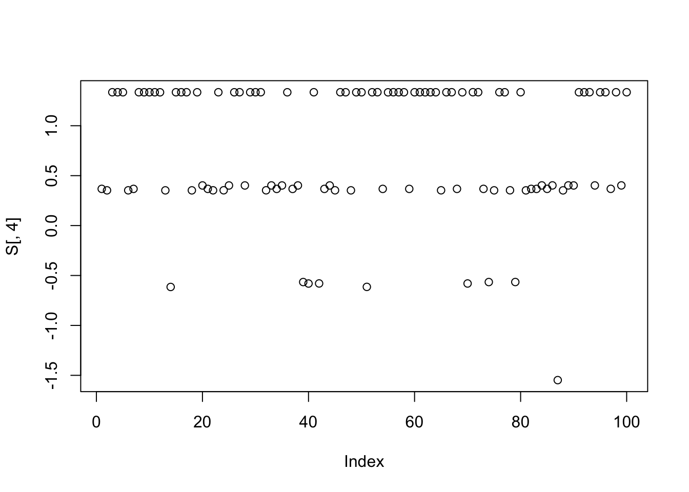
| Version | Author | Date |
|---|---|---|
| d8229f1 | Matthew Stephens | 2026-01-17 |
set.seed(2)
n.comp = 4
w.init = matrix(rnorm(nrow(X1)*n.comp), nrow=n.comp)
fit.par = ica.R.par(X1,n.comp,w.init = w.init)
S = t(fit.par %*% X1)
cor(S,L) [,1] [,2] [,3]
[1,] -0.98455827 -0.1520249 0.14815968
[2,] -0.03577012 -0.9985716 -0.03737348
[3,] -0.60875474 0.4666760 -0.60228323
[4,] -0.14573193 0.1488690 0.98525544plot(S[,1])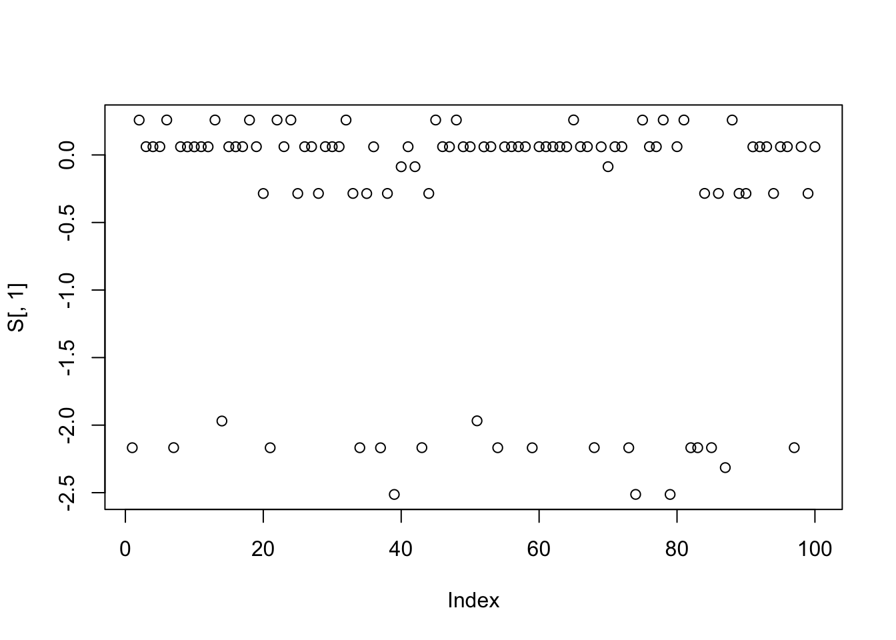
| Version | Author | Date |
|---|---|---|
| d8229f1 | Matthew Stephens | 2026-01-17 |
plot(S[,2])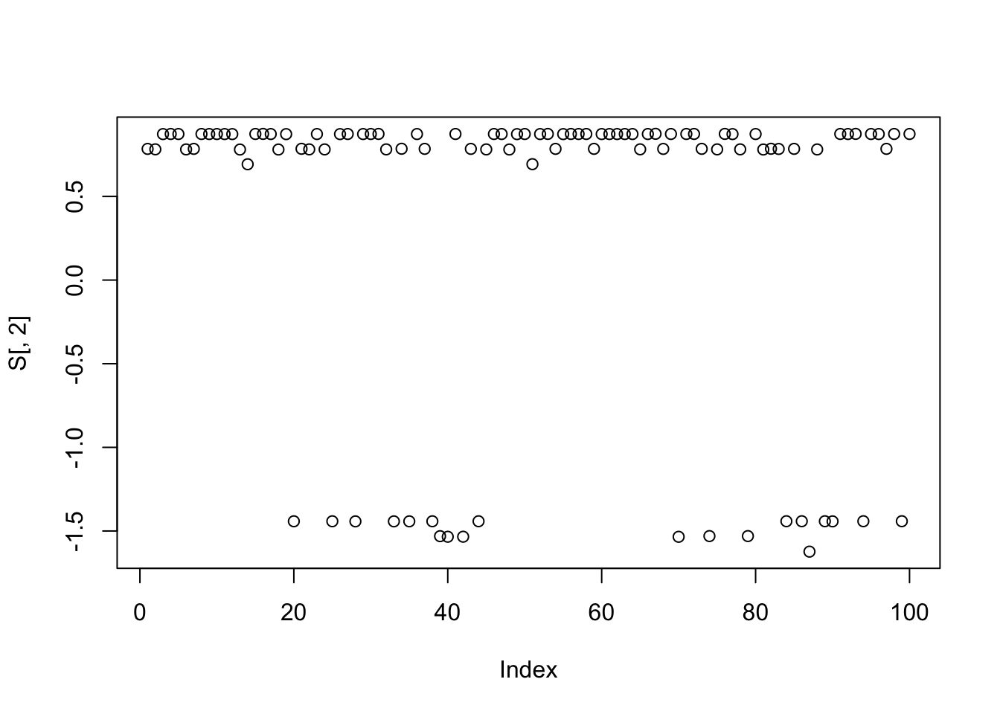
| Version | Author | Date |
|---|---|---|
| d8229f1 | Matthew Stephens | 2026-01-17 |
plot(S[,3])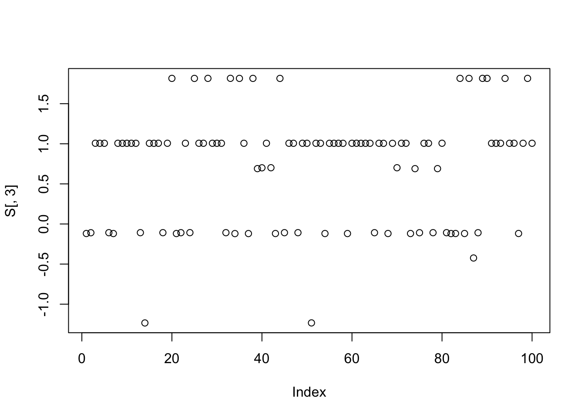
| Version | Author | Date |
|---|---|---|
| d8229f1 | Matthew Stephens | 2026-01-17 |
plot(S[,4])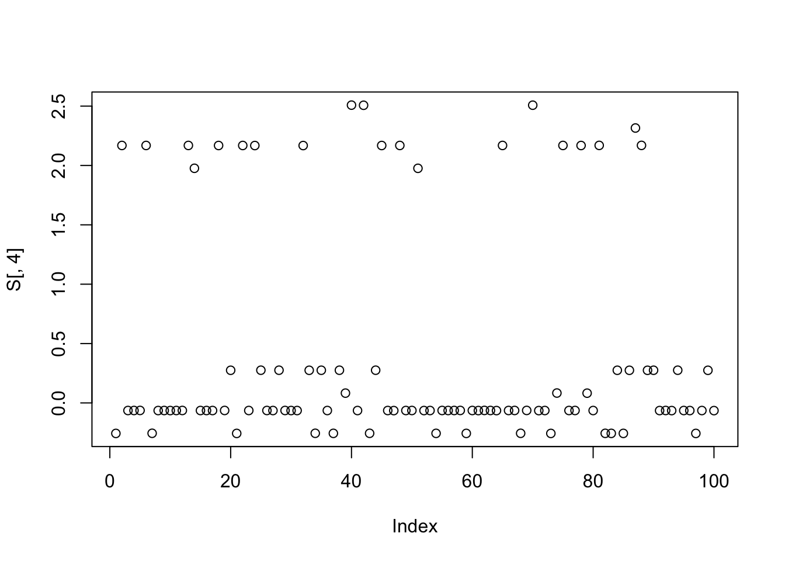
| Version | Author | Date |
|---|---|---|
| d8229f1 | Matthew Stephens | 2026-01-17 |
Here I try without orthogonalizing. This is mostly just a check on my modified code since this should be just the same as running multiple versions of the single-unit method in parallel. (Since we are not orthogonalizing we can run more components than the number of true sources without issue.) The results look very similar to the single-unit results. My idea is that this might be a useful initialization for the orthogonal method.
set.seed(1)
n.comp = 10
w.init = matrix(rnorm(nrow(X1)*n.comp), nrow=n.comp)
fit.par = ica.R.par(X1,n.comp,w.init = w.init,orthogonalize = FALSE)
S = t(fit.par %*% X1)
cor(S,L) [,1] [,2] [,3]
[1,] -9.999999e-01 -1.652949e-08 6.250002e-02
[2,] -5.307910e-01 2.801397e-01 -1.990466e-01
[3,] 8.752287e-09 9.999999e-01 6.602047e-09
[4,] 9.999999e-01 -1.681281e-05 -6.257330e-02
[5,] 6.249998e-02 1.401655e-08 -9.999999e-01
[6,] 7.307743e-01 -6.163156e-02 -6.999585e-01
[7,] -9.999999e-01 -1.652949e-08 6.250002e-02
[8,] 1.349310e-05 -9.999999e-01 -1.016738e-04
[9,] 6.249998e-02 1.401655e-08 -9.999999e-01
[10,] -9.999999e-01 -1.652949e-08 6.250002e-02plot(S[,1])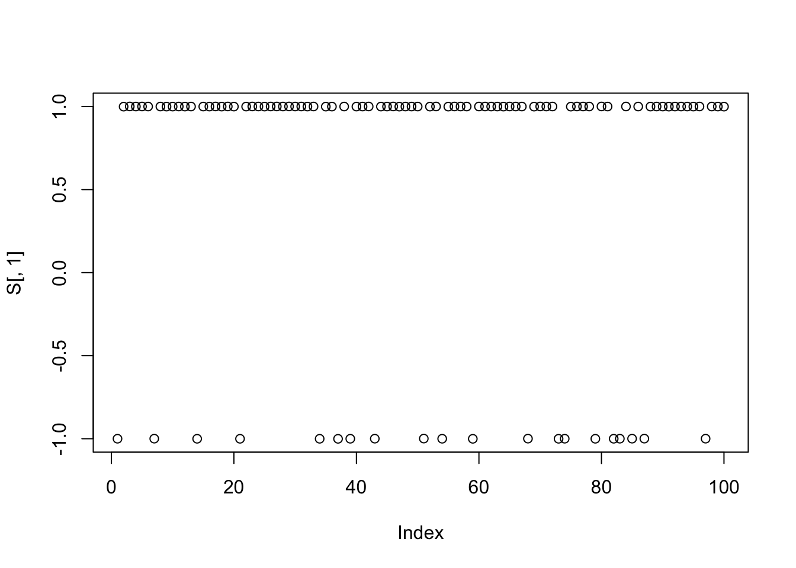
| Version | Author | Date |
|---|---|---|
| d8229f1 | Matthew Stephens | 2026-01-17 |
plot(S[,2])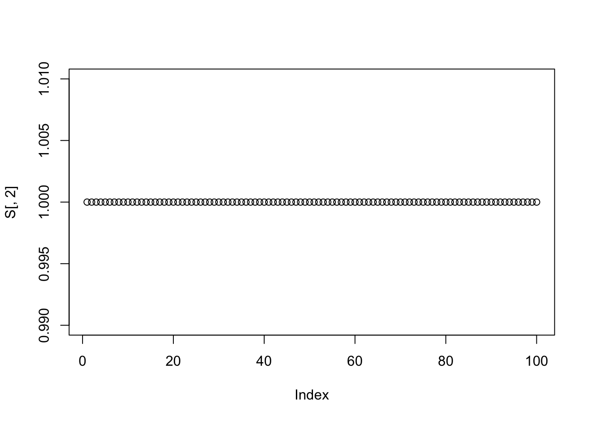
| Version | Author | Date |
|---|---|---|
| d8229f1 | Matthew Stephens | 2026-01-17 |
plot(S[,3])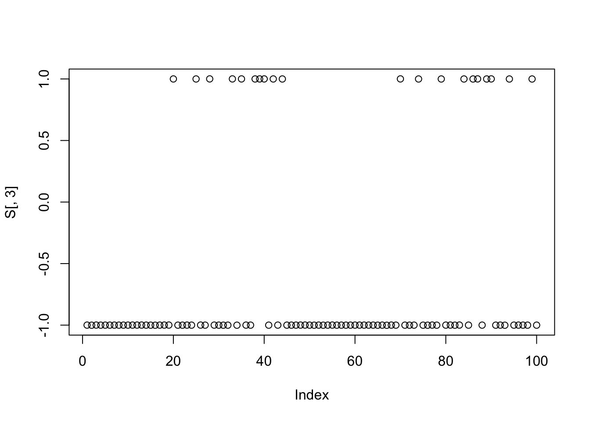
| Version | Author | Date |
|---|---|---|
| d8229f1 | Matthew Stephens | 2026-01-17 |
plot(S[,4])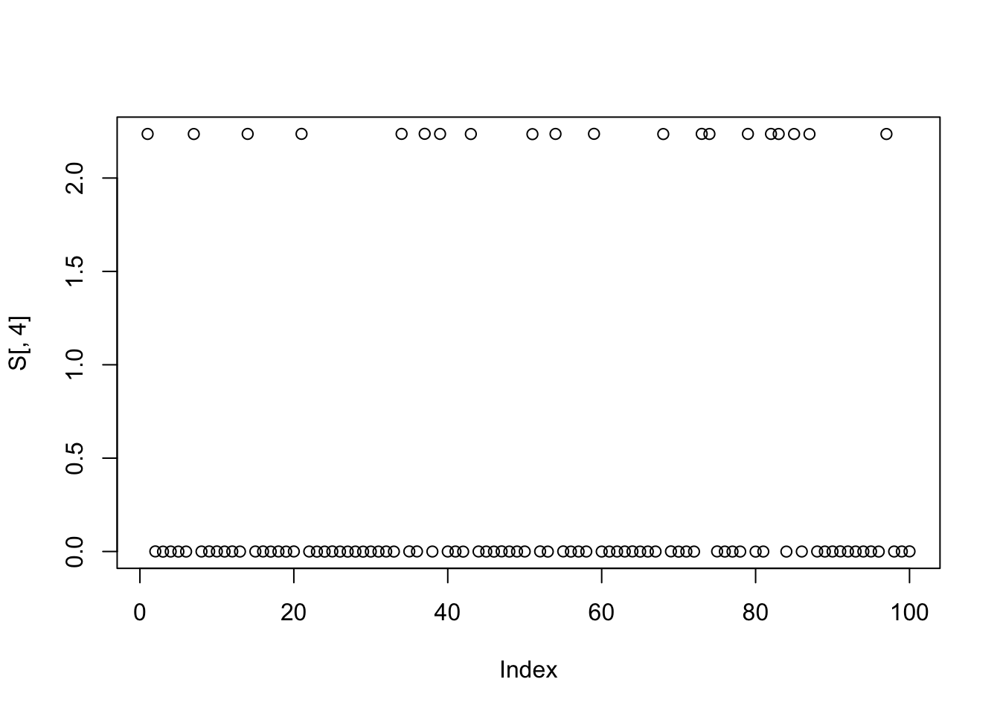
| Version | Author | Date |
|---|---|---|
| d8229f1 | Matthew Stephens | 2026-01-17 |
Deflationary fastICA
Now try deflationary fastICA. Here I can set it to 3 components. The first component is very well found (as we saw with single unit fastICA). Subsequent components are less clean, presumably because of the orthogonality constraint. It seems that the exact fit of the first component ends up paying a price in terms of noisier fits to subsequent components, whereas in parallel fastICA all components are fit simultaneously and so can share the “error” from the orthogonality constraint more evenly.
set.seed(1)
n.comp=3
fit.def = ica.R.def(X1,n.comp, w.init = matrix(rnorm(n.comp*nrow(X1)), n.comp, nrow(X1)))
S = t(fit.def %*% X1)
cor(S,L) [,1] [,2] [,3]
[1,] -1.361601e-05 -0.9999999 -7.151533e-05
[2,] 6.860840e-02 -0.3033097 -9.528488e-01
[3,] 9.462371e-01 -0.1386017 2.325638e-01plot(S[,1])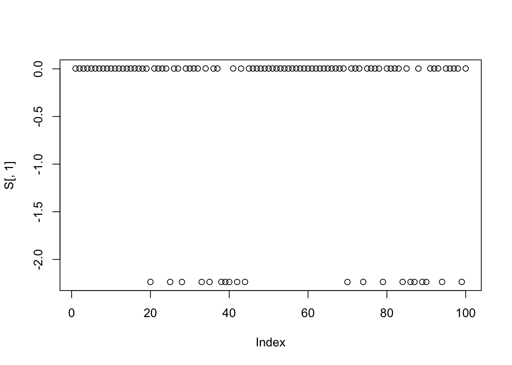
| Version | Author | Date |
|---|---|---|
| d8229f1 | Matthew Stephens | 2026-01-17 |
plot(S[,2])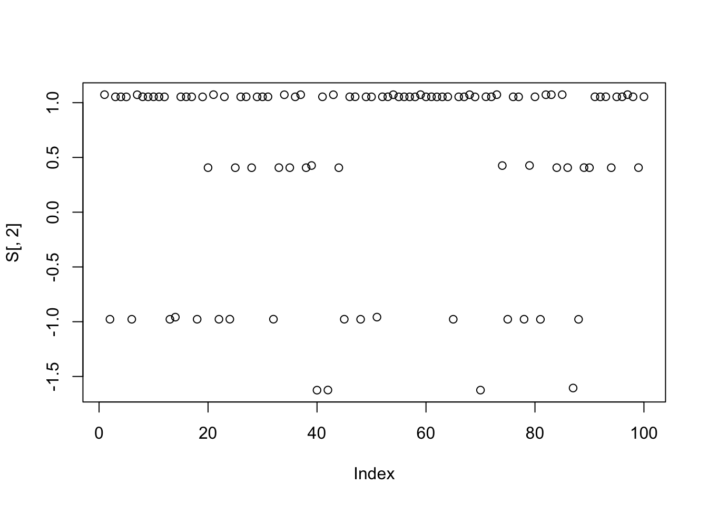
| Version | Author | Date |
|---|---|---|
| d8229f1 | Matthew Stephens | 2026-01-17 |
plot(S[,3])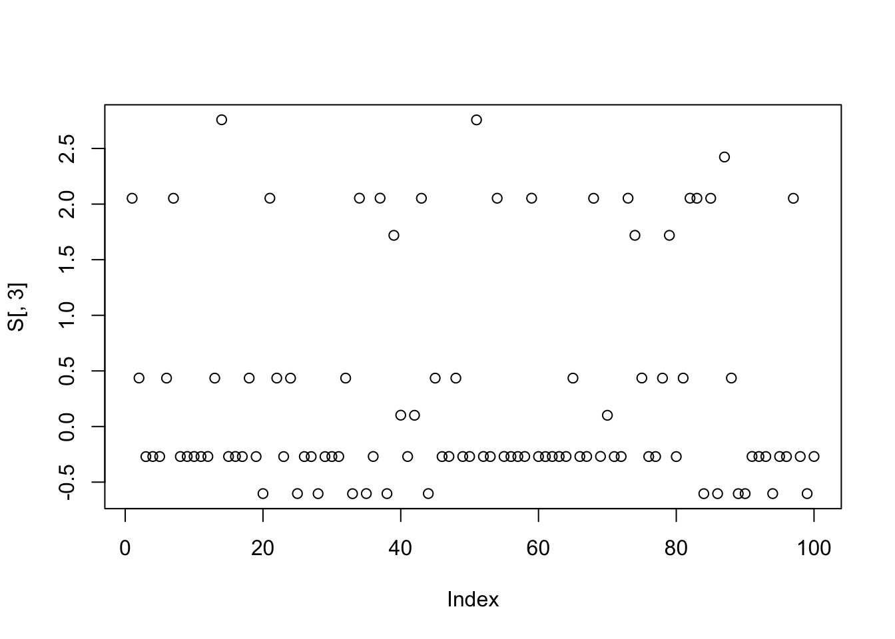
| Version | Author | Date |
|---|---|---|
| d8229f1 | Matthew Stephens | 2026-01-17 |
A second seed gives similar results
set.seed(2)
n.comp=3
fit.def = ica.R.def(X1,n.comp, tol= 1e-4, fun = "logcosh",alpha = 1, maxit=200, verbose = FALSE, w.init = matrix(rnorm(n.comp*nrow(X1)), n.comp, nrow(X1)))
S = t(fit.def %*% X1)
cor(S,L) [,1] [,2] [,3]
[1,] -1.146943e-08 0.9999999 1.897259e-08
[2,] 5.934043e-02 0.3349836 -9.422238e-01
[3,] -9.402238e-01 -0.2105460 -2.083869e-01plot(S[,1])
| Version | Author | Date |
|---|---|---|
| d8229f1 | Matthew Stephens | 2026-01-17 |
plot(S[,2])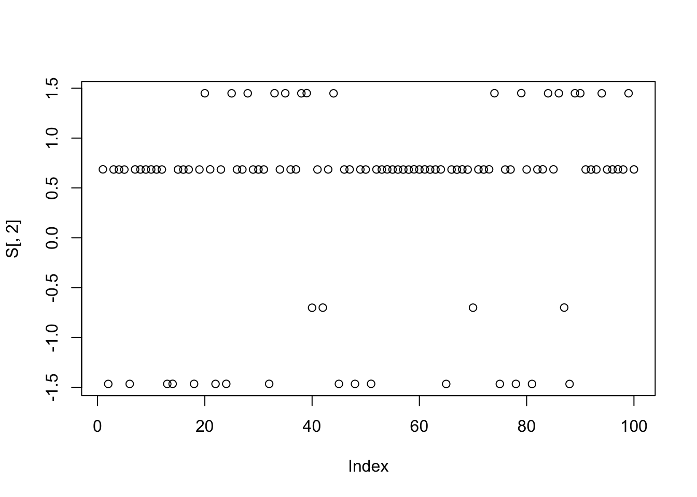
| Version | Author | Date |
|---|---|---|
| d8229f1 | Matthew Stephens | 2026-01-17 |
plot(S[,3])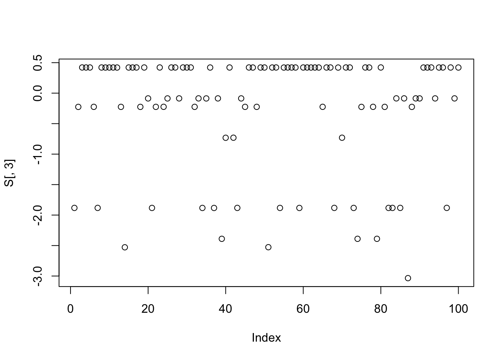
| Version | Author | Date |
|---|---|---|
| d8229f1 | Matthew Stephens | 2026-01-17 |
9 group simulations
Here I try 9 groups, with 20 members each, which should be harder.
K=9
p = 1000
n = 100
set.seed(1)
L = matrix(0,nrow=n,ncol=K)
for(i in 1:K){L[sample(1:n,20),i]=1}
FF = matrix(rnorm(p*K), nrow = p, ncol=K)
X = L %*% t(FF) + rnorm(n*p,0,0.01)
plot(X %*% FF[,1])
| Version | Author | Date |
|---|---|---|
| d8229f1 | Matthew Stephens | 2026-01-17 |
X1 = preprocess(X)
X1 = rbind(rep(1,ncol(X1)), X1)Run parallel ICA: it basically finds 8 of the groups with correlation above 0.94, and the 9th has correlation 0.87.
set.seed(1)
n.comp = nrow(X1)
w.init = matrix(rnorm(nrow(X1)*n.comp), nrow=n.comp)
fit.par = ica.R.par(X1,n.comp, w.init = w.init)
S = t(fit.par %*% X1)
apply(abs(cor(S,L)),1,max) [1] 0.9887991 0.9653187 0.1640476 0.4108103 0.9825396 0.9445731 0.9816406
[8] 0.9810462 0.8655577 0.9717311 0.9808735plot(S[,1])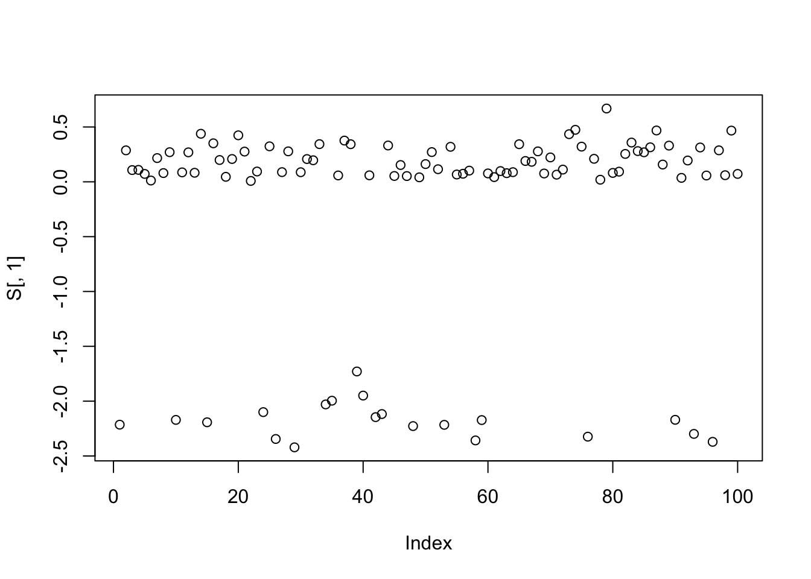
| Version | Author | Date |
|---|---|---|
| d8229f1 | Matthew Stephens | 2026-01-17 |
plot(S[,2])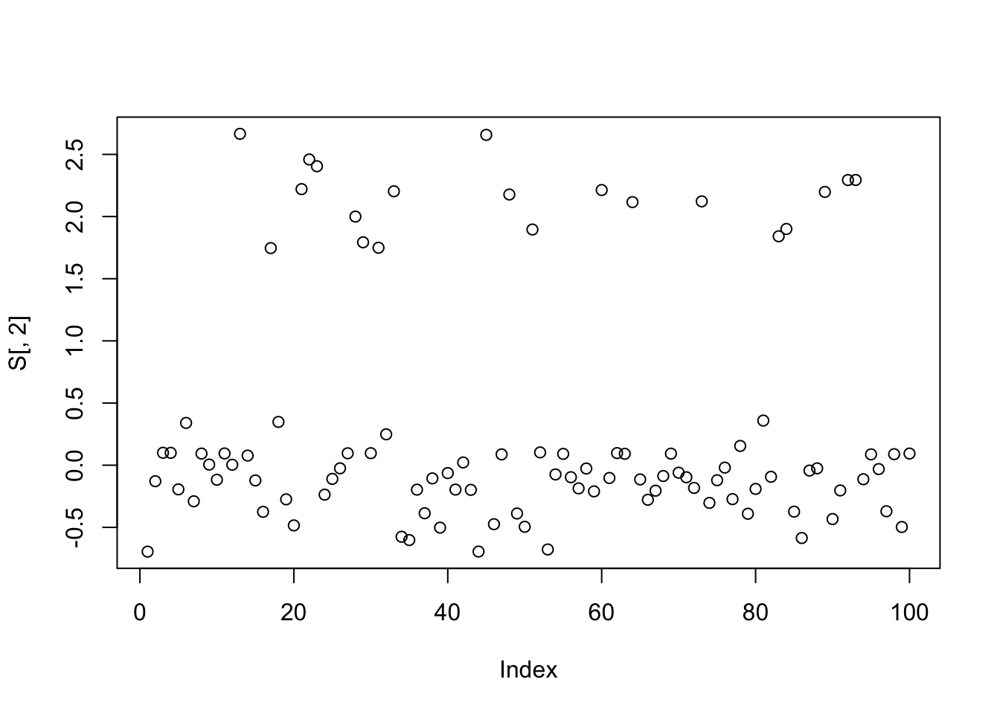
| Version | Author | Date |
|---|---|---|
| d8229f1 | Matthew Stephens | 2026-01-17 |
plot(S[,9])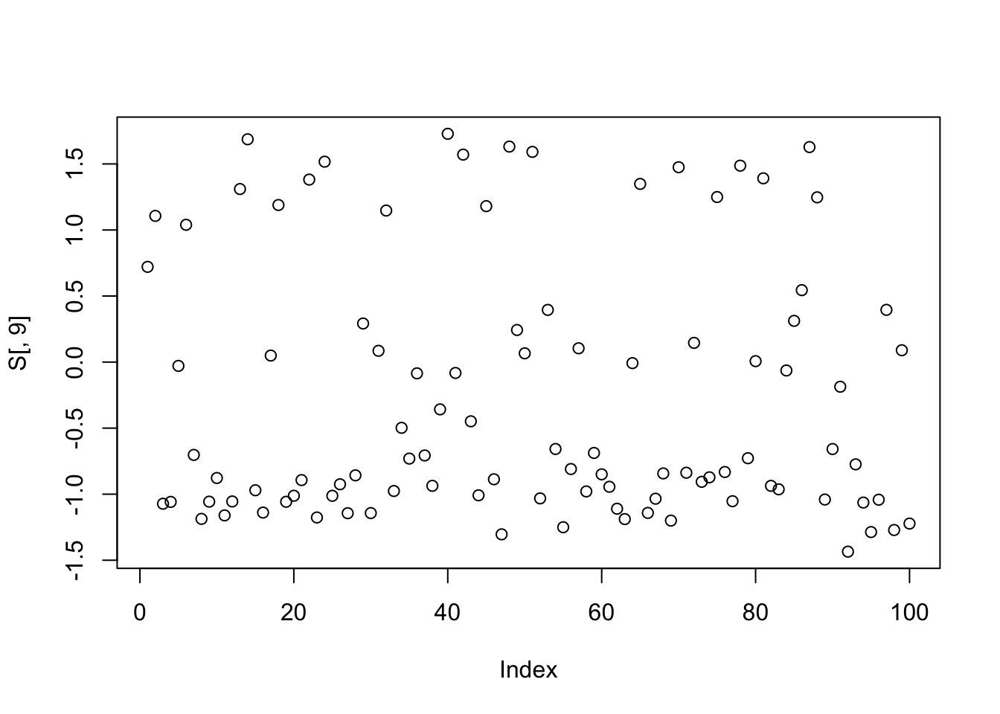
| Version | Author | Date |
|---|---|---|
| d8229f1 | Matthew Stephens | 2026-01-17 |
A second seed gives similar, maybe slightly better, results:
set.seed(2)
n.comp = nrow(X1)
w.init = matrix(rnorm(nrow(X1)*n.comp), nrow=n.comp)
fit.par = ica.R.par(X1,n.comp, w.init = w.init)
S = t(fit.par %*% X1)
apply(abs(cor(S,L)),1,max) [1] 0.9740556 0.9603759 0.3834314 0.9444636 0.9868587 0.9749268 0.1611379
[8] 0.9402877 0.9816102 0.9799988 0.9892195plot(S[,1])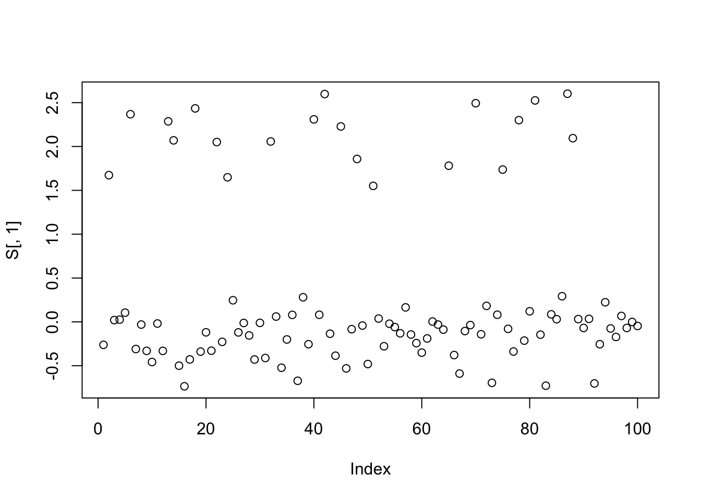
| Version | Author | Date |
|---|---|---|
| d8229f1 | Matthew Stephens | 2026-01-17 |
plot(S[,2])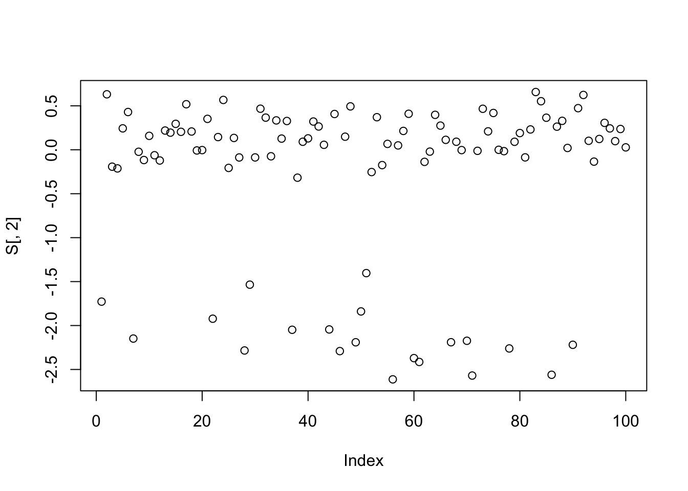
| Version | Author | Date |
|---|---|---|
| d8229f1 | Matthew Stephens | 2026-01-17 |
plot(S[,8])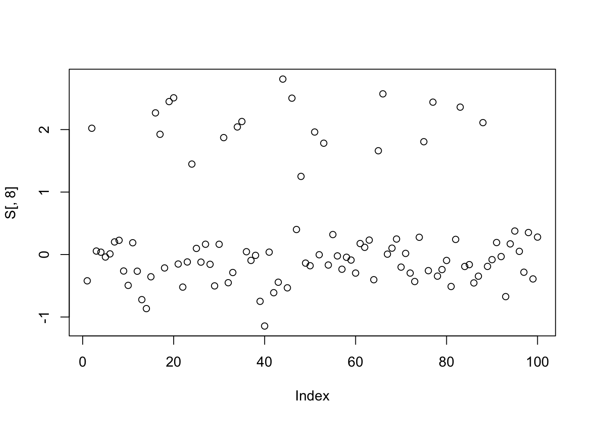
| Version | Author | Date |
|---|---|---|
| d8229f1 | Matthew Stephens | 2026-01-17 |
I wondered whether giving it more dimensions would actually reduce the error introduced by the orthgonality constraint, but it seems that the extra noise introduced stops it finding the binary components (it finds one):
X1 = preprocess(X,n.comp=20)
X1 = rbind(rep(1,ncol(X1)), X1)
set.seed(1)
n.comp = 11
fit.par = ica.R.par(X1,n.comp, w.init = matrix(rnorm(n.comp*nrow(X1)), nrow=n.comp))
S = t(fit.par %*% X1)
apply(abs(cor(S,L)),1,max) [1] 0.9696284 0.3874139 0.4147951 0.2863461 0.6898449 0.3865361 0.5677173
[8] 0.3801426 0.4881350 0.3999057 0.2928903plot(S[,6])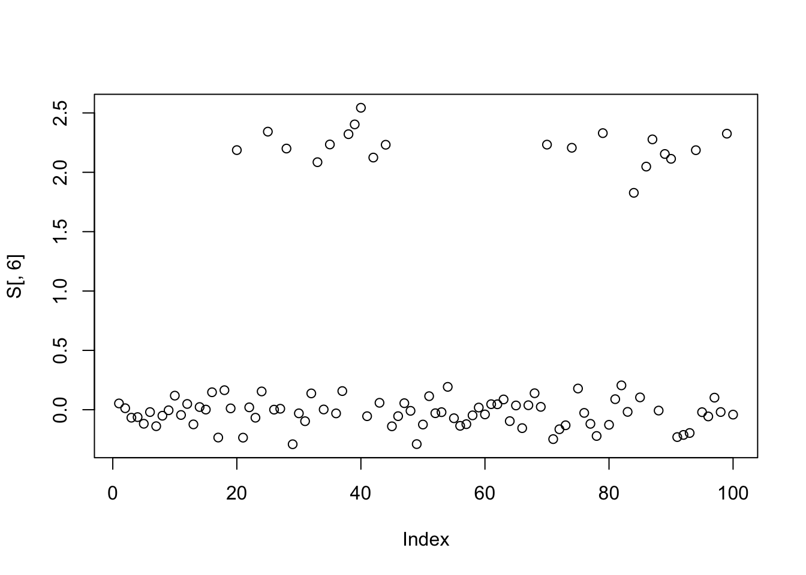
| Version | Author | Date |
|---|---|---|
| d8229f1 | Matthew Stephens | 2026-01-17 |
It seems that this this is actually also an issue for the single unit method: here I run the single-unit method 100 times and only fraction of the time does it find a source:
set.seed(1)
n.comp = 100
fit.par = ica.R.par(X1,n.comp, w.init = matrix(rnorm(n.comp*nrow(X1)), nrow=n.comp), orthogonalize = FALSE)
S = t(fit.par %*% X1)
apply(abs(cor(S,L)),1,max) [1] 0.3486995 0.3442829 0.3662299 0.3191996 0.6114282 0.3658695 0.5528319
[8] 0.5528319 0.6123722 0.3394015 0.3485522 0.3191996 0.3664842 0.6648383
[15] 0.6083954 0.4420344 0.3486978 0.3665407 0.3487001 0.3313149 0.5528319
[22] 0.6501902 0.3666398 0.9999997 0.3668176 0.3658418 0.3663637 0.3487001
[29] 0.4392766 0.6501902 0.3486812 0.3665190 0.7360156 0.9999995 0.6501902
[36] 0.3653017 0.2893610 0.9999997 0.5528319 0.3486492 0.9999997 0.3487100
[43] 0.3486973 0.3663184 0.6114345 0.3666130 0.5528319 0.3487010 0.3486977
[50] 0.3487530 0.4397011 0.6114298 0.3665257 0.6114228 0.5227349 0.9999995
[57] 0.3666509 0.3487092 0.3665095 0.9999997 0.6501902 0.3487126 0.5719167
[64] 0.5963962 0.3666432 0.6114227 0.9999997 0.9999917 0.9999997 0.3486982
[71] 0.3489090 0.3665342 0.3486986 0.3665316 0.9999997 0.9999997 0.9999997
[78] 0.4408575 0.4400330 0.3664380 0.3487385 0.3660577 0.3486950 0.3661094
[85] 0.3667053 0.4404916 0.3487013 0.6501902 0.3487046 0.4293693 0.3487047
[92] 0.3664419 0.3666271 0.6114246 0.6803448 0.3191996 0.6114296 0.5732014
[99] 0.9999997 0.6114304plot(S[,2])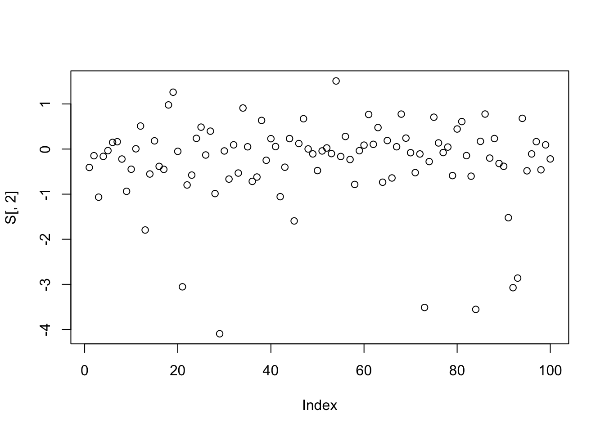
| Version | Author | Date |
|---|---|---|
| d8229f1 | Matthew Stephens | 2026-01-17 |
I wondered if we initialize by focussing on the top PCS we will find more sources, but it seems not?
set.seed(1)
n.comp = 21 # this is also the number of rows of X1
w.init = diag(21) # initialize at each PC/row of X1
fit.par = ica.R.par(X1,n.comp, w.init = w.init, orthogonalize = FALSE)
S = t(fit.par %*% X1)
apply(abs(cor(S,L)),1,max) [1] 0.01947294 0.37473433 0.55229597 0.36507315 0.61141132 0.55283194
[7] 0.99999977 0.45525268 0.34881836 0.61237223 0.35076485 0.31919957
[13] 0.55283193 0.61139851 0.01707029 0.36672403 0.61061492 0.61140778
[19] 0.31919956 0.66492514 0.68317124plot(S[,2])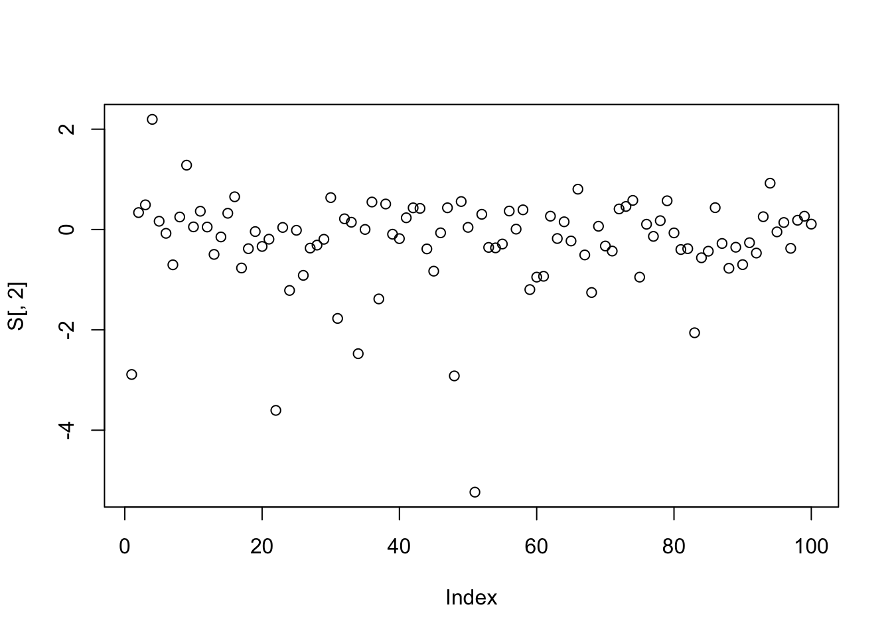
| Version | Author | Date |
|---|---|---|
| d8229f1 | Matthew Stephens | 2026-01-17 |
sessionInfo()R version 4.4.2 (2024-10-31)
Platform: aarch64-apple-darwin20
Running under: macOS Sequoia 15.6.1
Matrix products: default
BLAS: /System/Library/Frameworks/Accelerate.framework/Versions/A/Frameworks/vecLib.framework/Versions/A/libBLAS.dylib
LAPACK: /Library/Frameworks/R.framework/Versions/4.4-arm64/Resources/lib/libRlapack.dylib; LAPACK version 3.12.0
locale:
[1] en_US.UTF-8/en_US.UTF-8/en_US.UTF-8/C/en_US.UTF-8/en_US.UTF-8
time zone: Asia/Tokyo
tzcode source: internal
attached base packages:
[1] stats graphics grDevices utils datasets methods base
other attached packages:
[1] fastICA_1.2-7
loaded via a namespace (and not attached):
[1] vctrs_0.7.1 cli_3.6.5 knitr_1.51 rlang_1.1.7
[5] xfun_0.56 stringi_1.8.7 otel_0.2.0 promises_1.5.0
[9] jsonlite_2.0.0 workflowr_1.7.2 glue_1.8.0 rprojroot_2.1.1
[13] git2r_0.36.2 htmltools_0.5.9 httpuv_1.6.16 sass_0.4.10
[17] rmarkdown_2.30 jquerylib_0.1.4 evaluate_1.0.5 tibble_3.3.1
[21] fastmap_1.2.0 yaml_2.3.12 lifecycle_1.0.5 whisker_0.4.1
[25] stringr_1.6.0 compiler_4.4.2 fs_1.6.6 Rcpp_1.1.1
[29] pkgconfig_2.0.3 rstudioapi_0.18.0 later_1.4.6 digest_0.6.39
[33] R6_2.6.1 pillar_1.11.1 magrittr_2.0.4 bslib_0.10.0
[37] tools_4.4.2 cachem_1.1.0